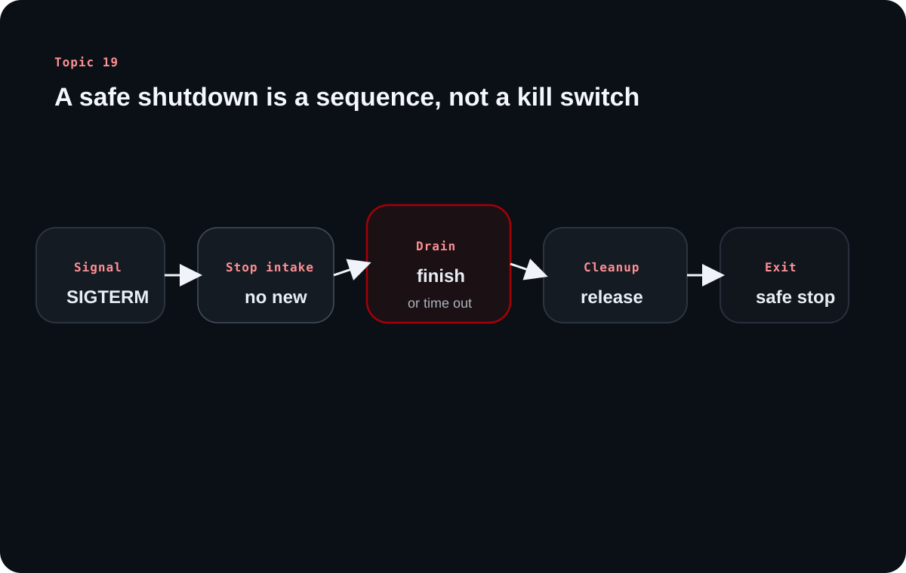

Topic 19 explains how a backend server should stop. The goal is not simply to terminate a process, but to protect transactions, avoid dropped work, and let deployments finish without corrupting ongoing activity.
The source treats shutdown as a protocol, not a panic move. A server should stop taking new work, finish or time-limit in-flight work, release resources cleanly, and only then exit.
Chapter 1
Graceful shutdown exists because deployments and restarts can interrupt real user work
The source begins with a high-stakes example to show why abrupt shutdown is dangerous.
Critical requests should not be cut in half when a server restarts
Deployment systems and process managers restart servers routinely, but the old process may still be handling important work such as payment processing or state-changing API calls. If that process dies abruptly, the system can lose transactions, create duplicates, or leave data half-written.
This is why graceful shutdown matters for user trust, not just for process hygiene. The shutdown path is part of the product experience.
Graceful shutdown means stopping politely instead of disappearing instantly
The source compares shutdown to ending a gathering politely: stop inviting new people in, let current conversations finish, clean up, and then close the space. In backend terms, that means protecting in-flight work before the process exits.
This mindset helps beginners stop thinking of shutdown as a single command and start seeing it as a controlled sequence.
Chapter 2
The operating system asks a process to stop through signals, not through telepathy
The source grounds shutdown in operating system behavior so the implementation feels less magical.
Every backend server is just a process with a lifecycle
A backend application is born, runs, and eventually terminates as an operating system process. On Unix-like systems, shutdown requests are communicated through signals, which gives the application a chance to react intentionally rather than being torn down with no warning.
That is why signal handling is central to graceful shutdown in real servers.
SIGTERM and SIGINT allow cleanup; SIGKILL does not
The source focuses on SIGTERM as the polite termination request from deployment systems and process managers, and SIGINT as the user-triggered interrupt often seen during local development. Both can be handled so shutdown routines can run.
SIGKILL is different. It forces immediate process death and gives the application no opportunity to drain requests or release resources cleanly.
Signal
Typical meaning
Can the app react?
SIGTERM
Polite shutdown request
Yes
SIGINT
Interrupt, often Ctrl+C
Yes
SIGKILL
Immediate forced stop
No
Chapter 3
Connection draining protects in-flight requests while blocking new traffic
The heart of graceful shutdown is deciding what to do with traffic that is already in motion.
The server should stop accepting new requests first
The source describes connection draining as the step where the server stops taking new connections or new requests while allowing current work to continue. This prevents the shutdown window from expanding indefinitely.
Load balancers and service discovery systems matter here, because the shutting-down instance should stop receiving fresh traffic before it tries to finish its remaining work.
In-flight requests get a chance to finish within a bounded window
A graceful server lets existing requests complete rather than dropping them mid-flight. The source uses the restaurant analogy here effectively: stop seating new diners, but let the current tables finish.
This is especially important for write-heavy or payment-like flows where interrupted work can create customer-facing inconsistencies.
Learning diagram

Graceful shutdown is a sequence: catch the signal, stop intake, drain active work, clean resources, and only then exit the process.
Chapter 4
Cleanup and timeout rules keep shutdown safe without letting it hang forever
A polite shutdown still needs boundaries, because a process cannot wait forever.
Files, sockets, database handles, and temporary resources should be released deliberately
The source lists file handles, network connections, database resources, temporary files, caches, and other acquired resources as things that need ordered cleanup. Releasing them in reverse acquisition order is a useful mental model because dependencies often unwind that way.
This avoids leaks, inconsistent shutdown states, and painful next-start behavior caused by stale resources.
Timeouts stop graceful shutdown from becoming endless shutdown
The source recommends a bounded wait window, such as 30 seconds, so the server has time to finish reasonable work but does not stall shutdown forever. That compromise is essential when some requests or cleanup paths misbehave.
This is another good beginner lesson: graceful does not mean infinite patience. It means controlled patience with a clear exit policy.
Chapter 5
Framework helpers are useful, but the real skill is understanding the shutdown sequence
The source ends with implementation guidance without pretending everyone needs to memorize one language-specific API.
Most shutdown implementations follow the same shape across frameworks
Catch SIGTERM or SIGINT, stop accepting new connections, wait for in-flight requests to finish or time out, clean up resources, and then exit. Frameworks may package these steps differently, but the core flow is stable across platforms.
That means the concept is more important than the exact code snippet. Once the idea is clear, the framework-specific implementation becomes easier to understand and verify.
Overall takeaway
What to remember
Graceful shutdown protects real work during restarts. A backend process should catch stoppable signals, stop new intake, drain current requests, clean up resources, and exit only after that sequence has been given a bounded chance to complete.